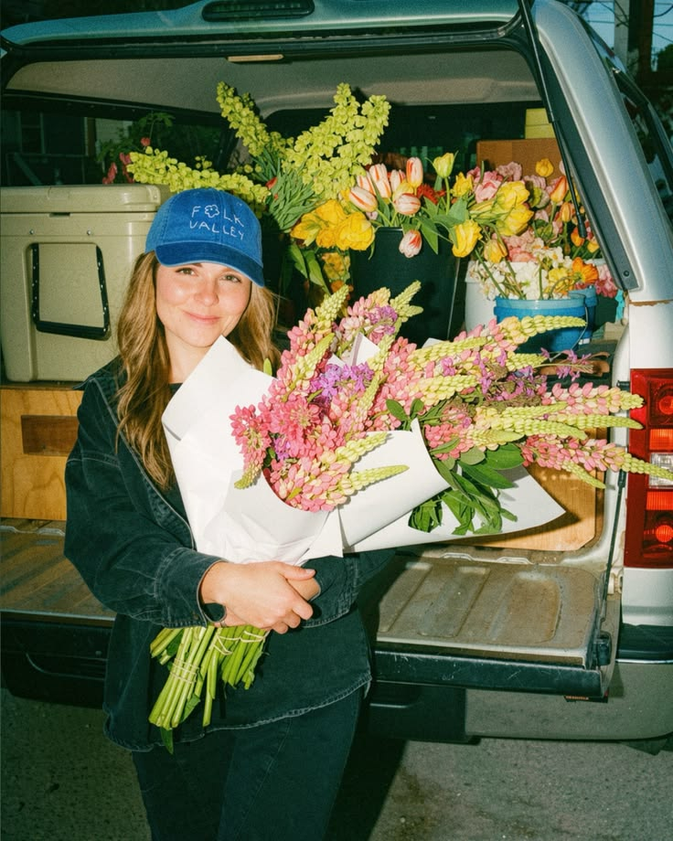
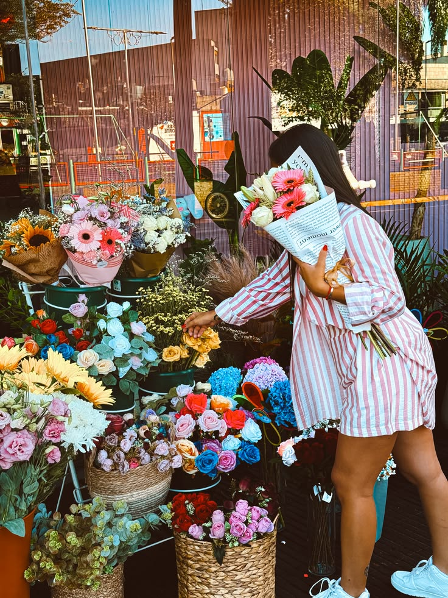

Présentation de l'équipe



Quatre femmes, une envie commune : créer et partager.
Nées de la rencontre de quatre univers, de quatre personnalités et de savoir-faire complémentaires, nous avons imaginé un lieu où la créativité se partage et où les idées prennent vie. Autour de notre passion commune pour les fleurs et la création, chacune apporte sa sensibilité, son expertise et sa touche personnelle. Au-delà des bouquets, nous réunissons différents services et savoir-faire pour proposer un lieu vivant, singulier et inspirant. Notre projet repose sur une conviction simple : ensemble, nous pouvons aller plus loin, créer autrement et faire naître de belles choses. Plus qu'une boutique, nous avons voulu créer un espace de rencontre, de partage et d'expression, où chaque talent trouve sa place et où chaque création raconte une histoire. Quatre femmes, quatre univers, une même envie : entreprendre ensemble, partager nos passions et donner vie à nos idées.